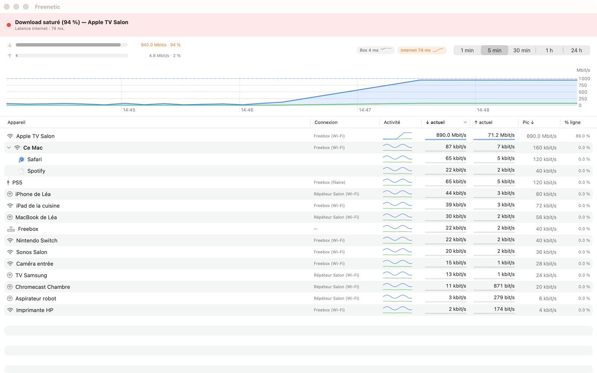
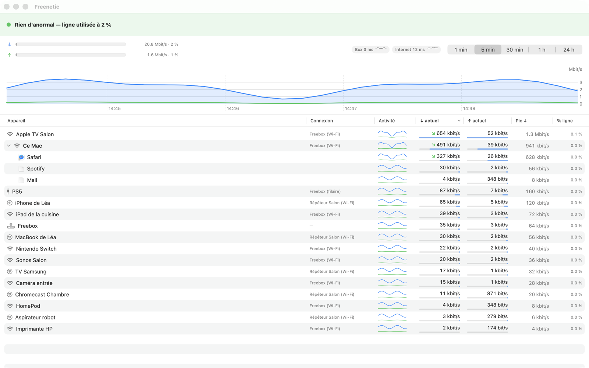
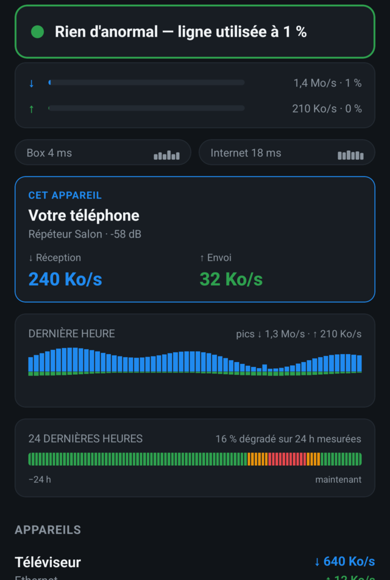
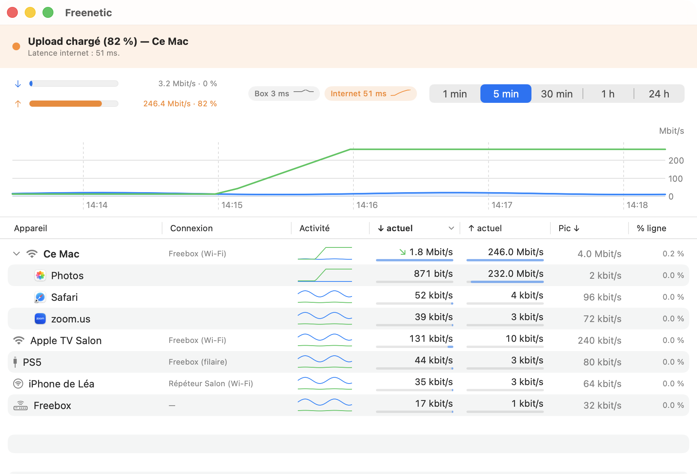
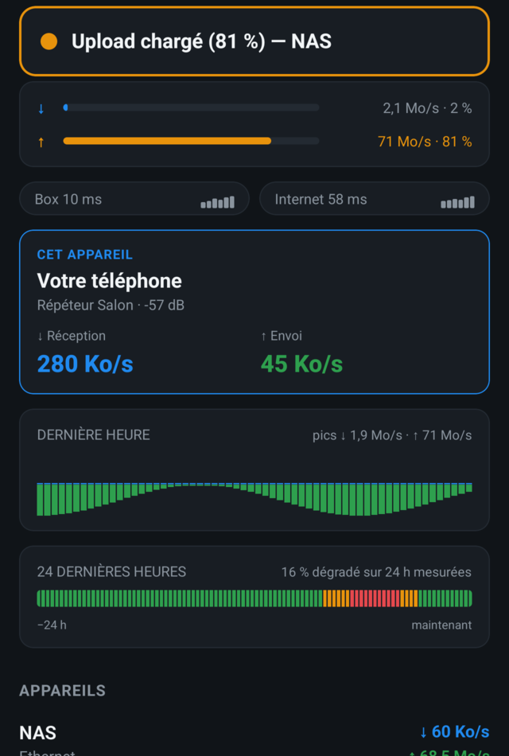
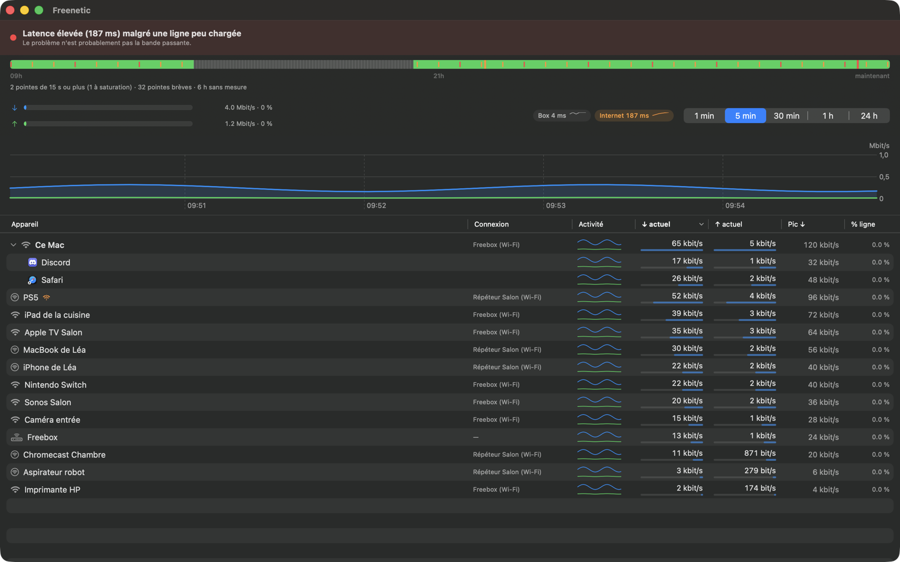
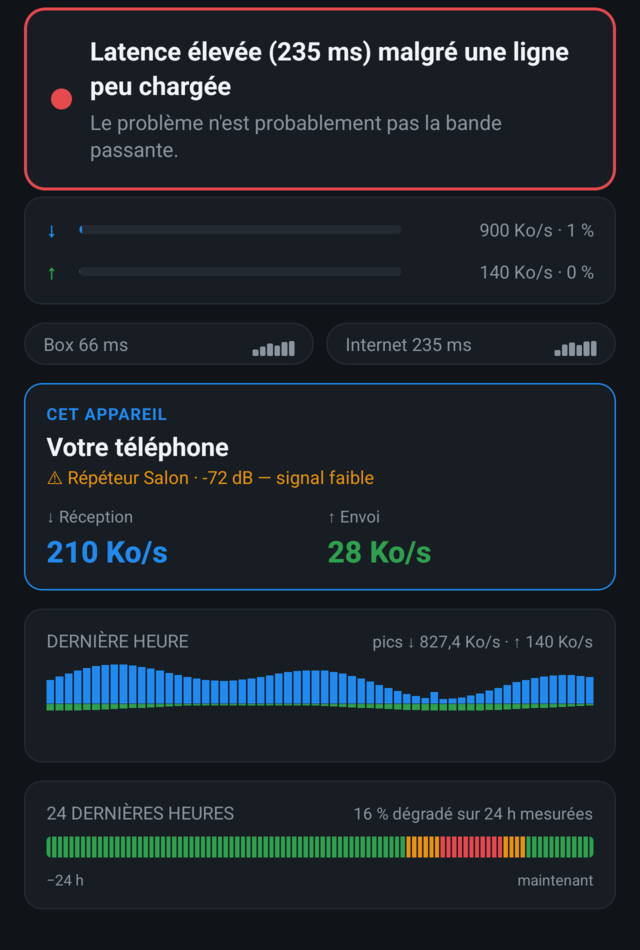

Ça rame. Et là, tout le monde accuse tout le monde.
Freenetic interroge votre Freebox et vous répond par une phrase, pas par un graphique : « Download saturé (94 %) — Téléviseur ». Cinq secondes, un nom, et la discussion est close.
Téléchargement gratuit, 7 jours d'essai complet sur Mac. Ensuite un achat unique à partir de 5,99 €, à vie. Aucun compte, aucun cloud : rien ne sort de chez vous.
Download saturé (94 %) — TéléviseurRien d'anormal — ligne utilisée à 1 %
Latence Internet : 74 ms.
↓ Réception 118 Mo/s↑ Envoi 2,1 Mo/s
Voilà tout ce que vous avez à lire. Ce bandeau est réévalué chaque seconde, en tête d'écran, sur le Mac comme sur le téléphone.

Votre Freebox sait déjà tout ça. Elle ne le dit à personne.
Ses écrans sont des instantanés bruts qui changent chaque seconde, et qu'il faut savoir lire. Freenetic les lit à votre place, en continu, et écrit le résultat en français. Il n'y a rien à interpréter : la réponse est déjà une phrase, et elle nomme quelqu'un.
Rien d'anormal — ligne utilisée à 1 %
Ce n'est ni la box, ni le foyer. Vous pouvez arrêter de redémarrer des choses au hasard : le problème est ailleurs, et vous venez d'économiser une heure.
Upload chargé (81 %) — NAS
Quelqu'un envoie, et l'app dit qui. Sur le Mac, elle va d'un cran plus loin et nomme aussi l'application responsable.
Latence élevée (235 ms) malgré une ligne peu chargée
Le débit n'y est pour rien. C'est le piège classique : on cherche un téléchargement pendant que le vrai coupable est le Wi-Fi, ou la file d'attente de la box.
Une soirée ordinaire, et quatre coupables différents.
Quatre pannes qui se ressemblent toutes vues de loin — « ça rame » — et qui ne se réparent pas du tout pareil. Voici ce que les deux applications affichent, dans l'ordre où ça arrive.
21 h 04
Chez vous, tout va bien. Allez chercher ailleurs.
Verdict vert des deux côtés. La latence est bonne, personne ne sature rien. Si le site rame quand même, il rame chez lui : ce n'est pas votre ligne, et il n'y a rien à réparer ici.


Deux mesures prises séparément, à quelques secondes d'écart : d'où le 2 % d'un côté et le 1 % de l'autre.
21 h 12
Le film en 4K du salon mange 89 % de la ligne.
Le verdict passe au rouge et donne un nom. La courbe montre la montée en charge, et la ligne du téléviseur affiche à elle seule 890 Mbit/s. Plus besoin de faire le tour des chambres pour demander qui télécharge : vous savez qui, quoi, et depuis quand.
21 h 40
La visio bégaie : c'est vous qui envoyez.
Verdict orange, et le sens compte. Le téléphone nomme l'appareil — ici le NAS, qui pousse sa sauvegarde. Le Mac va plus loin : sa propre ligne se déplie et désigne l'application, Photos, en train d'expédier la photothèque à 232 Mbit/s. Personne d'autre ne croise le réseau de la box et les applications du Mac.


22 h 15
La ligne est vide, et pourtant tout saccade.
Les débits sont à zéro. Freenetic le dit noir sur blanc plutôt que de vous laisser chercher un téléchargement qui n'existe pas. Et c'est là que le téléphone fait ce que le Mac ne peut pas : il mesure ce qu'il reçoit à l'endroit exact où vous êtes assis. Répéteur Salon, −72 dB, signal faible.


Captures réelles des deux applications. Les captures Mac rejouent des situations vécues avec des appareils renommés ; les captures Android sortent du mode démo, dont les appareils sont fictifs par construction.
Le problème, c'est peut-être juste l'endroit où vous êtes assis.
Une ligne saturée et un Wi-Fi faible au fond du jardin, ça se ressemble beaucoup et ça ne se répare pas pareil. Le téléphone est le seul à pouvoir mesurer ce qu'il reçoit là où il est. C'est toute la raison d'être de la version mobile.
Le point d'attache et la puissance du signal, en clair : à quel répéteur vous êtes accroché, et à combien de décibels.
Sa propre latence, mesurée depuis la pièce où vous êtes — pas depuis le bureau où dort le Mac.
Sa réception et son envoi réels, à comparer d'un coup d'œil avec ce que la ligne a encore de libre.
Et hier soir, c'était quoi ?
On ouvre ce genre d'app après la panne, jamais pendant : pendant, on est occupé à râler. Freenetic garde la dernière heure minute par minute, et les 24 dernières heures colorées selon l'état de la ligne. Le téléchargement de 3 h du matin ne s'échappe plus, et « tout va bien » ne veut plus dire « il ne s'est rien passé ».
Les deux bandes d'historique, telles quelles dans l'application.
Le téléphone demande au Mac, pas à la box.
La Freebox n'aime pas être interrogée par trois appareils à la fois : elle finit par décrocher. Alors on appaire, une fois pour toutes. Six chiffres à comparer d'un écran à l'autre, et c'est fini — pas de compte, pas de serveur au milieu, tout se joue sur votre réseau local.
La FreeboxLa source des mesures. Une seule application la sollicite.
Le MacInterroge la box, et mesure en plus ses propres applications.
Le téléphoneReçoit tout du Mac, et garde ses propres sondes.
Une fois appairé, l'en-tête du téléphone affiche « via MacBook de Léa » : vous savez toujours d'où viennent les chiffres. Il continue de mesurer sa latence et son signal sur place, donc son verdict reste vrai là où il se trouve. Et si vous l'autorisez, appareil par appareil, il peut lire la consommation par application du Mac.
Ce que chacun sait, et que l'autre ignore.
Ce que vous voyez
Mac
iPhone & Android
Le verdict en français, réévalué en continu
Oui
Oui
Tous les appareils du foyer et leurs débits en direct
Oui
Oui
L'historique : dernière heure, 24 heures
Oui
Oui
La latence vers la box et vers Internet
Oui
Oui
Quelle application consomme quoi
OuiPar une extension système que vous approuvez ; elle compte les octets sans lire le contenu.
OuiMesurée par le Mac, lue sur le téléphone une fois les deux appairés, et seulement si vous l'autorisez.
Dans la barre de menus, et le trafic en direct dans le Dock
Oui
—
Ce que cet appareil reçoit là où il est : sa latence, son signal Wi-Fi
Non
OuiLa raison d'être de la version mobile.
Un mode démo pour tout voir sans Freebox
Oui
Oui
Une seule est publiée. Autant vous le dire avant que vous cherchiez.
Les deux autres arrivent, et vous saurez exactement où elles en sont avant de sortir votre carte.
MacDISPONIBLE
Sur le Mac App Store depuis juillet 2026. macOS 14.6 ou plus récent, 7 jours d'essai complet.
iPhoneBÊTA
En validation chez Apple, mais testable dès maintenant : la bêta est ouverte à tous sur TestFlight.
AndroidBÊTA
Ouverte aux testeurs avant publication sur le Play Store. Il me manque des volontaires, et c'est bloquant.
Un achat. Pas un abonnement. Jamais.
Le téléchargement est gratuit. Ensuite, un seul paiement débloque l'app à vie : pas de renouvellement qui vous surprend dans dix-huit mois, pas de fonction rançonnée plus tard, mises à jour comprises.
Freenetic Desktop
L'application Mac : barre de menus, fenêtre d'analyse, trafic en direct dans le Dock, consommation par application.
5,99 €une fois, pour toujours
Freenetic Mobile
L'application iPhone et Android, avec la mesure de ce que le téléphone reçoit là où il se trouve.
5,99 €une fois, pour toujours
LE PLUS UTILE
Les deux
Mac, iPhone et Android, plus l'appairage entre eux : le verdict sur l'écran que vous avez sous la main, et une box qui respire.
9,99 €une fois, pour toujours
Sur Mac, 7 jours d'essai complet sans carte et sans compte. L'app vous annonce elle-même les conditions au premier lancement, avec la date exacte de fin. Si elle ne vous sert pas, laissez l'essai expirer : il ne se passera rien.
Si vous vivez dans les deux mondes, achetez du côté Apple.
Le pack acheté chez Apple — depuis le Mac ou depuis l'iPhone, peu importe — débloque aussi Android : une fois les deux appareils appairés, votre Mac le déclare au téléphone sur votre réseau local. La vérification a lieu chez vous, entre vos appareils.
L'inverse n'existe pas. Un achat sur Google Play ne débloque ni le Mac ni l'iPhone : ce sont deux magasins étrangers l'un à l'autre, et Apple n'a aucun moyen de savoir ce que vous avez acheté chez Google. Je n'ai pas de solution honnête à ça, alors je le dis avant l'achat plutôt qu'après.
Vos données ne connaissent pas Internet.
Freenetic parle à votre Freebox sur votre réseau local, écrit l'historique dans une base posée sur votre appareil, et s'arrête là. Il n'y a pas de serveur à moi : il n'y a rien à collecter, rien à revendre, rien à se faire voler.
Pas de compte, pas de cloud, pas de télémétrie. Aucune mesure d'audience, aucun SDK publicitaire, aucun traceur.
Le jeton d'appairage reste dans le stockage sécurisé du système — Keychain sur Apple, Keystore sur Android. Il ne quitte jamais l'appareil.
La mesure par application, sur Mac, passe par une extension système que vous approuvez. Elle compte les octets sans jamais lire le contenu, et vous la révoquez quand vous voulez.
Un bug signalé le matin part souvent le soir même.
Freenetic est écrite par une seule personne, ce qui a un défaut et un avantage. L'avantage : il n'y a personne entre votre e-mail et la correction. Les notes de version sont publiques, dans le détail.
Toutes les Freebox exposant l'API Freebox OS moderne — Révolution, Delta, Pop, Ultra — avec un firmware récent, en mode routeur (le mode par défaut). Les répéteurs Wi-Fi Free sont pris en charge. L'app est développée et testée sur Freebox Ultra.
Faut-il un Mac pour utiliser l'application mobile ?
Non. Le téléphone sait interroger la Freebox tout seul, exactement comme le Mac : verdict, appareils, historique, latence. L'appairage est un confort, pas une condition — il évite simplement que plusieurs appareils sollicitent la box en même temps.
Comment on appaire le téléphone et le Mac ?
Les deux applications affichent six chiffres. Vous vérifiez qu'ils correspondent d'un écran à l'autre, vous validez, c'est terminé. Tout se joue sur votre réseau local, sans compte et sans serveur intermédiaire. Ensuite, l'en-tête du téléphone indique « via » le nom de votre Mac, pour que vous sachiez d'où viennent les chiffres.
Je peux voir l'app avant d'avoir une Freebox sous la main ?
Oui, les deux versions ont un mode démo qui rejoue des situations simulées : verdicts, jauges, graphiques, liste d'appareils, tout est là sans rien brancher. Les captures Android de cette page en viennent.
Ma Freebox est derrière un autre routeur (double NAT) : ça marche ?
Oui, tant que la box reste en mode routeur. Depuis la version 1.1.2, Freenetic détecte qu'elle n'est pas joignable par son adresse publique et bascule automatiquement sur son adresse locale. Si l'association échouait chez vous auparavant, mettez à jour : c'était ça.
Ma Freebox est en mode bridge (passerelle) : ça marche ?
Non, et autant l'écrire franchement. En mode bridge, la box s'efface : elle ne route plus, ne fait plus ni Wi-Fi ni DHCP, et ne voit donc plus vos appareils. C'est votre routeur tiers (UniFi, etc.) qui détient ces données désormais, et Freenetic ne sait pas lui parler. Il n'y aurait à peu près rien à vous montrer.
Qu'est-ce que ça fait que Freebox Connect ne fait pas ?
Un verdict écrit en français plutôt que des chiffres bruts, l'historique dans le temps plutôt qu'un instantané, la latence intégrée à ce verdict, le débit de chaque application de votre Mac, et la mesure de ce que le téléphone reçoit là où il est. Freebox Connect reste très bien pour redémarrer la box.
Pourquoi une extension système sur le Mac ?
C'est le seul mécanisme officiel d'Apple pour mesurer le trafic par application. Elle est facultative — tout le reste fonctionne sans — et se contente de compter des octets, localement, sans jamais lire ce qui passe.
Pour l'activer : cliquez sur « Activer la mesure par application » dans l'app, un guide pas à pas s'ouvre. macOS demande ensuite votre autorisation explicite dans Réglages Système → Général → Ouverture de session et extensions → Extensions réseau (bouton ⓘ). Vous pouvez la révoquer au même endroit à tout moment.
Les captures d'écran de cette page sont-elles réelles ?
Oui, pixel pour pixel. Les captures Mac rejouent des situations réelles avec des appareils renommés (« iPhone de Léa », « PS5 »…) pour protéger la vie privée d'un vrai foyer. Les captures Android sortent du mode démo, dont les appareils sont fictifs par construction. L'interface, les verdicts et la façon dont les mesures s'affichent sont exactement ce que vous verrez chez vous.
Prix, plateformes et achats
Quel palier je dois prendre ?
Freenetic Desktop à 5,99 € si vous ne surveillez que depuis le Mac. Freenetic Mobile à 5,99 € si vous voulez le verdict en poche et la mesure du Wi-Fi à l'endroit où vous êtes. Le pack à 9,99 € si vous voulez les deux et l'appairage entre eux. Un seul paiement dans tous les cas, à vie, sans abonnement.
Un achat sur Google Play débloque-t-il le Mac ou l'iPhone ?
Non, et il faut le dire clairement : Google Play et l'App Store sont deux magasins étrangers l'un à l'autre. Apple n'a aucun moyen de savoir ce que vous avez acheté chez Google.
Dans l'autre sens, en revanche, ça marche : le pack acheté chez Apple débloque aussi Android — depuis le Mac ou depuis l'iPhone, peu importe. C'est votre Mac qui le déclare au téléphone sur votre réseau local, une fois les deux appairés. Si vous utilisez les deux mondes, achetez du côté Apple.
Quand sort la version iPhone ?
L'application est terminée et passe la validation d'Apple ; elle sortira sur l'App Store dans les prochaines semaines. Je ne peux pas donner de date parce que je ne la connais pas. En attendant, la bêta est ouverte à tous sur TestFlight. Les acheteurs du pack l'auront incluse, il n'y aura rien à repayer.
Comment rejoindre la bêta Android ?
En trois étapes : rejoindre le groupe des testeurs avec le compte Google de votre téléphone, ouvrir le lien d'installation reçu par e-mail, puis garder l'app installée quatorze jours. Google exige douze testeurs restés inscrits deux semaines avant d'autoriser la publication, et une seule désinscription remet le compteur à zéro pour tout le monde. C'est le vrai service que vous me rendez.
Et pour suivre ce que deviennent les retours : chaque bug ou idée a son ticket public, avec son état d'avancement — lisible sans compte.
Mac App Store ou téléchargement direct ?
Mac App Store. Freenetic y est publiée depuis juillet 2026 : mises à jour automatiques, app sandboxée, signée et vérifiée par Apple, achat géré par votre compte Apple.
Écrivez-moi. C'est moi qui réponds.
Une question, un bug, une Freebox exotique ? Vos retours ne partent pas dans un formulaire de ticket : chaque bug ou idée a son ticket public, et vous pouvez suivre ce qu'il devient.